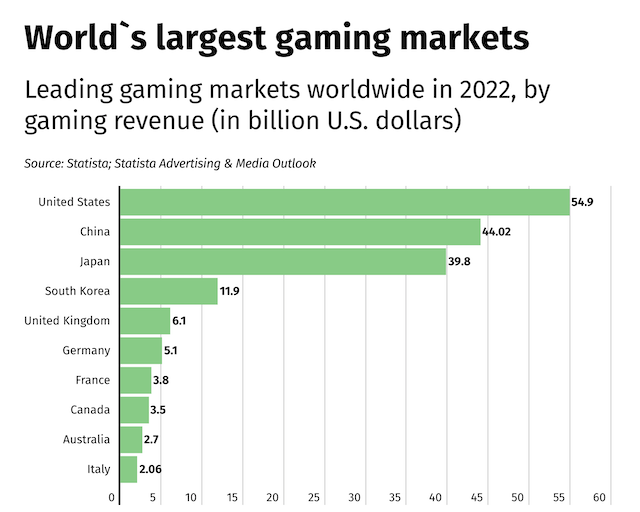

W h y C o m i c C o n ?
Just cosplayers alone in Asia, there has been a rapid increase in the Asia Pacific Cosplay and Otaku costumes market.
Meaning there is an increasing trend in the popularity of anime, manga, and gaming within Asia.
According to AnimeXpress, there is an expected growth of over $3605 million in this market by 2030.
As a result, Comic Con can bring a large number of people into Singapore. Being one of the most developed cities in Southeast Asia,
we can connect this event with Singapore's tourism to bring more people into Singapore for economic benefits.
Additionally, from looking at Comic Conventions from around the United States (e.g. Over 133 000 attendees in London Comic Con in 2017), there has been huge success, leading us to believe
that this package will be very popular.
Because Comic Con Singapore also includes gaming tournaments, the gaming market in Southeast Asia is one of the most attractive in the world,
according to Statistica, with over 100 million gamers. This is very attractive for our package, as we can target many of those the gamers to buy our package.

Gaming Markets
China
According to USC US-China Institute, China has a dominant position in the worldwide market for esports as well as the business that deals with mobile and online games
for personal computers.
The online gaming sector in China is now the biggest in the world, both in terms of the number of players (about 650 million) and the revenue (expected to reach 45 billion dollars in 2022).
Japan
It is anticipated that the value of the Japanese market for video games would reach $21 billion in the year 2021,
which would place it as the third biggest market in the industry worldwide.
There was a 12% increase in the market for video games in Japan in the year 2021.
The Japanese video game business is dominated by three international corporations: Sony, Konami, and Nintendo. These three companies are very influential in the industry.
T a r g e t M a r k e t s
China and Japan
Due to population as well as being one of the top contributors to the gaming industry/animationMalaysia
Neighbouring country, making them an easily accessible market.18-34 Years Old
Through a survey conducted by AnimeXpress in the Asia Pacific Cosplay and Otaku Costumes market, majority of the market is driven by young adults
aged between 18-34 years old. This gives strong evidence to extrapolate that majority of attendees interested in Comic Con and our package will be 18-34 year olds.
Although there isn't too much information on Comic Con in Singapore, Comic Con in San Diego is the largest in the world.
The age range who attended are evenly split between people in their 20s and 30s. Making 18-34 a prime demographic to target for our package.
T r a v e l H a b i t s
Travel Habits of Chinese Market
The Chinese people are foodies, and also shoppers!
According to the Hurun Report's 2017 study of Chinese travel, it's discovered that 27% of our age group said food was one of the major reasons of travelling. As for shopping, there is an increasing interest in finding unique items of purchase and local brands. Chinese tourists also spend around 25% of their travel budget shopping compared to 15% of other tourists.
Want Experiences
Chinese millennials are interested in experiences and to have find unique places and activities, then be able to show on social media. Amusement parks and natural areas that are exceptionally beautiful are two of the most popular destinations for Chinese visitors who go outside of the country.
Travel Habits of Japanese Market
Food, Shopping, and Relax
During their trips overseas, Japanese tourists are searching for escapist and gastronomic experiences, as shown by the results of a survey that was conducted by a private research firm in Tokyo. The survey also revealed that Japanese tourists are looking for opportunities to purchase items.
The answer that was chosen by the largest percentage of Japanese respondents when they were asked to provide one reason as to why they go overseas is "to relax." This was the response that was picked. The next two phrases that come after this are "delicious food" and "to escape from reality."
Travel Habits of Malaysian Market
There is a widespread belief that 65% of Malaysians would want to travel as much as they possibly can throughout their lifetime. Among the activities done during a vacation, shopping is the most popular choice (46%), followed by sightseeing (70%). Cultural immersion, historical immersion, and artistic immersion are some of the other activities that visitors from Malaysia have shown a higher interest in participating in.
Alcohol Consumption
 Having our target age 18-34, we can provide alcohol included activities. Although local Singaporeans are not heavy drinkers, according to Statistica, our target market in Southeast Asia are.
Having our target age 18-34, we can provide alcohol included activities. Although local Singaporeans are not heavy drinkers, according to Statistica, our target market in Southeast Asia are.
The top three markets we are targeting are China, Japan, and Malaysia. Although Malaysia has a low alcohol consumption rate, China and Japan is still fairly high.
China
Over the last several years, China has emerged as one of the most significant markets for alcoholic drinks worldwide, with an estimated worth of US$ 285 million. There are a number of variables that are contributing to the overall rise in alcohol use in China. Millennial women, who are defined as individuals who were born between 1981 and 1996, are one of the most significant contributors to the rise in global spending among Chinese women.
This is due to the fact that habits are evolving. Alcoholic drinks were often drank at social events in the past, such as dinner settings, when groups of men would raise their glasses to each other and toast to one another. In the past, drinking by oneself was quite uncommon, but that is no longer the case. Casual drinking is becoming more popular among Chinese millennials, especially among women, who do so by buying alcoholic beverages for their personal usage.
Japan
There is a significant portion of the beverage manufacturing business in Japan that is comprised of the alcoholic beverage industrial sector. Although the nation is well-known for its production of high-quality rice wine (sake) and Japanese clear liquor (shochu), which have a long history in the country, the processes of producing beer and whisky did not begin until the past few decades. Nevertheless, the beer sector in Japan is one of the biggest within the domestic liquor market, despite the fact that it has just a limited history of commercialization in the country.
In addition to liquer, the brewed beverage accounts for almost half of the sales of alcoholic beverages, which places sake and shochu in a secondary position than the brewed beverage.